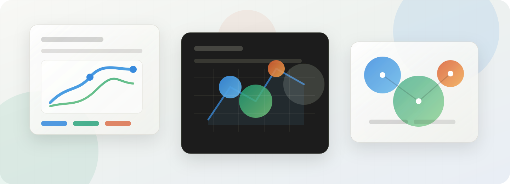
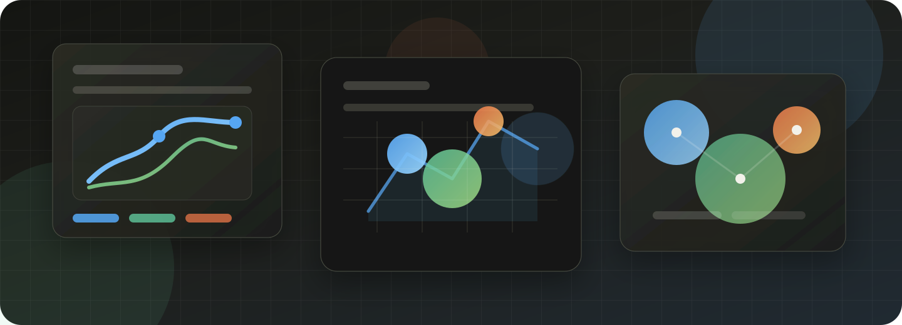

設計能力
從做畫面，轉向定義系統與判斷品質
AI 讓草圖、版型與內容變快，設計價值更集中在問題定義、體驗流程、設計系統一致性與品質治理。


彙整企業 AI 採用、規模化部署與產業分析的主要指標，作為理解後續圖表與分群內容的入口。
分開比較私人 AI 公司的最近一輪融資估值，以及涵蓋 AI 晶片、雲端、平台與應用的上市科技公司整體市值。兩榜採不同定價口徑，不合併排名。
以最近一輪可追溯的 post-money valuation 排序；變動率與前一輪可比估值比較。
| 排名 | 公司 | 估值 | 較前輪 | 核心業務 |
|---|
上市公司目前沿用 2026-06-30 公司整體市值排序；30 日股價變動比較 2026-06-01 與 2026-06-30 收盤價，待取得同口徑市場資料後整批重算。
| 排名 | 公司 | 整體市值 | 30 日股價變動 | AI 關聯 |
|---|
閱讀時請留意：私人公司估值更新頻率不一，外幣輪次以公告當期約值換算；上市榜顯示公司整體市值，不等同其 AI 業務價值。本版已更新 Anthropic 私人估值，上市榜仍為 2026-06-30 同口徑基準。
用來比較不同產業的 AI 導入強度。可透過下拉選單依滲透率或市場規模重新排序；將游標移至長條，可查看各產業的導入原因、估計基礎與市場規模指數。數字為 2025 年分析估計，OECD 與 Microsoft 資料只用於理解擴散背景，不直接混用。
用 X 軸比較 AI 投資強度、Y 軸比較生產力提升潛力，泡泡大小則代表市場規模。可先觀察右上角與大泡泡，找出同時具備投入、改善空間與市場放大效果的產業。
比較各產業常見的效益方向與導入限制。點擊卡片可查看典型應用、影響如何發生、衡量指標、落地風險與後續評估；卡片數字用於辨識改善方向，不代表所有企業都能取得相同成果。
比較各產業「用得多」與「用得深」的差異。深度整合表示 AI 已進入核心工作流，局部試行表示仍集中在特定團隊，探索評估則代表價值、風險與責任邊界仍在驗證。
用滲透速度、影響潛力與導入阻力辨識四類產業。點擊卡片可查看代表性應用、衡量指標、主要限制與後續評估，協助判斷不同產業應優先追求效率、治理或基礎能力建設。
從設計、產品、工程與行銷四種能力，理解工作價值如何從單一產出轉向問題定義、系統整合、商業判斷與品質治理。每張卡片呈現角色在 AI 工作流中的能力轉移。
星級代表影響深度，雷達圖代表五項能力的相對需求。可比較不同層級在問題定義、系統整合、內容營運、技術原型與品質治理上的能力組合；圖形用於理解職能方向，不是個人能力評分。
依分析用途整理公開報告，協助判斷哪些來源適合回答企業採用、全球擴散、投資回報、人才變化或治理問題。展開各分類可查看建議用途與原始報告；不同年份、樣本與定義的數字不直接混用。